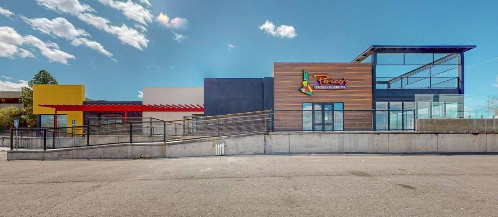

Food Near the Albuquerque Airport
Searching for food near ABQ airport? Yale Blvd is the road into the Sunport, which makes Yale Landing the last real meal before your flight and the first one after you land. It's 1.2 miles from the terminal — about three minutes — and the rental car return is on the way.
Albuquerque International Sunport
Getting Here
- Distance
- 1.2 miles
- Drive time
- About 3 minutes
- Parking
- Free, on site
- Route
- Straight up Yale Blvd
Better than the terminal
Airport food is expensive and forgettable. Three minutes up the road you can get a half-pound burrito smothered in red or green, a handmade paleta, or a pint of New Mexico beer on a patio looking at the Sandias. Park free, eat properly, and get back on Yale with time to spare.
If you've just landed
Head north on Yale from the terminal and you're here before you've finished adjusting to the altitude. If you want one meal that tells you where you are, order the chile relleno burrito at Perico's and ask for Christmas.
If you're flying out
Order ahead for pickup, eat before you drop the rental car, and skip whatever the terminal is charging. Perico's closes at 8pm on weekdays; the Paletería runs until 9pm every day if you just want something cold for the gate.
What's Here
Three Places, One Parking Lot

Mexican + New Mexican
Perico's Tacos & Burritos
Family-owned since 1982. Half-pound burritos, tacos by the six-pack, stuffed sopapillas, red or green chile.

Paletas · Ice Cream · Aguas Frescas
Paletería Cuauhtémoc
Handmade Mexican paletas, shaved ice, milkshakes, elote and aguas frescas. Open until 9pm every day.

Taproom · Wine · Coffee
FMV Brewing Co.
Seven New Mexico beers on tap, cocktails on local spirits, coffee roasted in house. Upstairs with a mountain-facing patio.
Common Questions
Good to Know
How far is Yale Landing from the Albuquerque airport?
1.2 miles — about a three-minute drive. Yale Blvd runs straight from the Sunport terminal to the property.
Is there food near the Albuquerque airport that isn't in the terminal?
Yes. Yale Landing at 2500 Yale Blvd SE has three independent places to eat and drink, all within one parking lot and about three minutes from the terminal.
Can I get takeout before a flight?
Yes — Perico's takes online orders for pickup, and the Paletería offers delivery through Grubhub if you'd rather have it come to your hotel.
What are the best places to eat near the Albuquerque airport?
Yale Landing has three independent options 1.2 miles from the terminal — Perico's for Mexican and New Mexican food, Paletería Cuauhtémoc for paletas and aguas frescas, and FMV Brewing Co. for New Mexico beer. Food near ABQ airport does not get much closer than this.
Where is there food near me if I am at the Sunport?
Head north on Yale Blvd. Yale Landing is 1.2 miles up with free parking. Check the hours board for what is open now before you drive over.
Are there restaurants near the Albuquerque Sunport terminal?
Yes — Yale Landing at 2500 Yale Blvd SE is the closest cluster of independent restaurants near the Albuquerque Sunport, about a three-minute drive from the terminal.
Where can I get breakfast near the Albuquerque airport?
Perico's opens at 9am on weekdays with breakfast burritos, huevos rancheros and Perico's Rancheros — breakfast near the Albuquerque airport, 1.2 miles from the terminal.